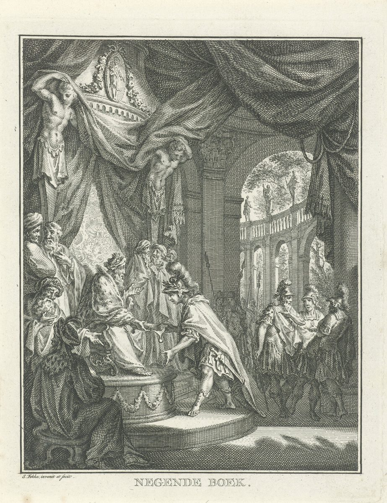

1 Samuel 29 — The Mister Translation

The Achish of 28:2, who tells David “I will make you keeper of my head all the days”, hands David the paper that makes him his bodyguard, while the court whispers and points. The courtiers’ suspicion is the commanders’ at Aphek in 29:3–5, who ask what “these Hebrews” are doing there. The etching is Simon Fokke’s own design, from a set of illustrations of the story of David and Saul.
_David_en_Saul_(serietitel),_RP-P-1909-2017.jpg){kind=link}
Translator's Notes — verse by verse
Aphek. “The Philistines gathered all their camps at Aphek”: the muster of 28:1 (already on these pages), told again from where it began. Aphek is the name of more than one town: the king of Aphek in the Sharon (Joshua 12:18), an Aphek on the Sidonian frontier (13:4), one in the hill country of Judah (15:53) and one in Asher (19:30), all already on these pages, and an Aphek in Aram (1 Kings 20:26). The Aphek where the Philistines camped before they took the ark (4:1, already on these pages) is usually put on the coastal plain, at the springs of Ras el-Ain (reported, not verified here), and this is probably the same ground, though the text does not say so. The chapter also steps back: 28:4 already has the Philistines at Shunem and Saul at Gilboa, while here the Philistines are still mustering and David is still marching with them. The ASV has “Now the Philistines gathered together all their hosts to Aphek”; the KJV “all their armies”; the NWT 1984 “proceeded to collect all their camps together”; the NIV “all their forces”; the Douay “all the troops of the Philistines”.
The spring in Jezreel. “Israel was camping by the spring that is in Jezreel”: ha-ayin, the spring. This is the Jezreel of the northern valley, under Gilboa, and not the Jezreel of Judah’s hill country from which David took Ahinoam (25:43, already on these pages). The spring is often identified with the one at the foot of Gilboa where Gideon camped, “the spring of Harod” (Judges 7:1, already on these pages), which is reported here, not verified. The Greek has “in Endor, the one in Jezreel”, as if the spring were the En-dor of 28:7 (already on these pages), where Saul found the woman; the Hebrew does not say so, and readings differ. The ASV has “the fountain which is in Jezreel”; the KJV “a fountain which is in Jezreel”; the NIV “by the spring in Jezreel”; the Douay “by the fountain which is in Jezrahel”.
Lords, hundreds and thousands. “And the lords of the Philistines were passing on by hundreds and by thousands”: seranim, the title of the rulers of the Philistine cities, as in “all the lords of the Philistines” (5:8, 6:12, already on these pages). It is not the word for “commanders”, sarim, of 18:30 (already on these pages); this chapter has both for what appear to be the same men, lords in verses 2, 6 and 7 and commanders in verses 3, 4 and 9, and this translation keeps the two apart. The consonants of seranim also spell “axles”, as in “axles of bronze” (1 Kings 7:30), and the NWT 1984 follows that to “the axis lords”; the title is more often explained as a Philistine word, which some compare with the Greek tyrannos (reported, not checked here). The ASV has “the lords of the Philistines passed on by hundreds, and by thousands”; the Geneva “the princes of the Philistines went forth by hundreds and thousands”; the NIV “the Philistine rulers marched with their units of hundreds and thousands”. “Thousands” is the word of the women’s song (18:7, already on these pages): here the thousands are marching units, and the song counts them as the slain.
David in the rear. “And David and his men were passing on in the rear, with Achish”: the place Achish gave the “keeper of my head” (28:2, already on these pages), beside the king at the back of the march. The ASV has “in the rearward”; the KJV “in the rereward”; the NIV “at the rear”; the Douay “were in the rear with Achis”.
What are these Hebrews? “What are these Hebrews?”: ha-ivrim ha-elleh. The phrase stands in one verse of the Hebrew Bible, this one. “Hebrews” is the Philistines’ name for Israel in this book (4:6, 13:19, 14:11, all already on these pages; see ivri), and here it is turned on David and his six hundred. The question also plays on the verse before: there the lords were ovrim, “passing on”, and here the men they ask about are ivrim, “Hebrews”, the same letters, the pun of “Hebrews crossed the Jordan” (13:7, already on these pages). The ASV has “What do these Hebrews here?”; the NWT 1984 “What do these Hebrews mean?”; the NIV “What about these Hebrews?”; the Douay “What mean these Hebrews?”.
Nothing found, and a defector. “Is not this David, the servant of Saul king of Israel”: Achish names David by his old master. “Who has been with me these days, or these years”: zeh yamim o zeh shanim, an idiom for a time of unsaid length; 27:7 (already on these pages) counts “a year and four months”. The Greek has “this second year”, the NIV “for over a year”, the NWT 1984 “a year or two”. “And I have found nothing in him from the day he defected”: me-yom nofelo, “from the day of his falling”. Nafal, to fall, is the verb of going over to the other side: of those who “fell away” to the king of Babylon (2 Kings 25:11) and of what Irijah says Jeremiah is doing, “You are falling away to the Chaldeans” (Jeremiah 37:13–14, not yet). The Chronicler tells this scene from David’s side: Manassites “fell” to David when he came with the Philistines against Saul, and the lords of the Philistines sent him away, saying, “He will fall away to his master Saul at the cost of our heads” (1 Chronicles 12:20, which is 12:19 in English Bibles). The ASV has “since he fell away unto me”; the KJV “since he fell unto me”; the NWT 1984 “the day of his deserting”; the NIV “from the day he left Saul”; the Douay “since the day that he fled over to me”. For “nothing”, meumah, the Geneva has “I have found nothing in him”, the ASV “no fault”, the NWT 1984 “a single thing”.
The man, and an adversary. “Send the man back”: the commanders never say David’s name to Achish; in verse 4 he is “the man” and “this one”, and he is named only in the song they quote in verse 5. “To his place where you appointed him” is Ziklag (27:6, already on these pages). “That he not become an adversary to us in the battle”: le-satan. “As an adversary” stands in four verses of the Hebrew Bible: the angel of Jehovah in the road to Balaam (Numbers 22:22 and 22:32, already on these pages), here, and David of the sons of Zeruiah (2 Samuel 19:23, now on these pages). None of the four is the devil. The Greek has epiboulos, a plotter, “of the camp”. The ASV has “lest in the battle he become an adversary to us”; the NWT 1984 “a resister of us in the battle”; the NIV “he will turn against us during the fighting”.
The heads of those men. “And with what would this one make himself acceptable to his lord?”: yitratseh, from ratsah, to be pleasing. This form stands in one verse of the Hebrew Bible. “Is it not with the heads of those men?”: David has brought Philistine heads and Philistine skins before, Goliath’s head (17:54) and two hundred foreskins (18:27, both already on these pages). The ASV has “wherewith should this fellow reconcile himself unto his lord?”; the NWT 1984 “with what should this person put himself in favor with his lord?”; the NIV “How better could he regain his master’s favor”; the Douay “how can he otherwise appease his master”.
The song, a third time. “Is not this David, of whom they answered one another in the dances, saying, ‘Saul has struck down his thousands, and David his ten thousands’?”: the women sang it in 18:7, and Achish’s servants quoted it at Gath (21:12, both already on these pages); now the commanders quote it. The song stands in three verses of the Hebrew Bible, and each time the singers are higher in rank: women, servants, commanders. Saul heard a ranking in it; the commanders hear a count of the dead. The ASV has “of whom they sang one to another in dances”; the NWT 1984 “to whom they kept responding in the dances”; the NIV “the David they sang about in their dances”; the Douay “to whom they sung in their dances”.
As Jehovah lives. “And Achish called David, and said to him: ‘As Jehovah lives’”: chai Yehovah, the oath of Israel, Saul’s at 14:39 and 19:6 and, to the medium, at 28:10 (all already on these pages). Here it comes from a Philistine king, and the text does not say why; the Greek has “The Lord lives”. The ASV has “As Jehovah liveth, thou hast been upright”; the NWT 1984 “As Jehovah is living, you are upright”; the NIV “you have been reliable”; the Douay “thou art upright and good in my sight”.
Going out and coming in. “And your going out and your coming in with me in the camp is good in my eyes”: the idiom of leadership. David led Israel by it (18:13, 18:16, already on these pages), Moses asked for a man to do it (Numbers 27:17) and Caleb still had the strength for it (Joshua 14:11, both already on these pages). “Your going out and your coming in” stands in four verses of the Hebrew Bible, in two spellings: here, the one line that stands in both 2 Kings 19:27 and Isaiah 37:28, and the psalm, “Jehovah will guard your going out and your coming in” (Psalm 121:8, already on these pages). “For I have not found evil in you”: the reader knows what Achish does not, David’s practice at Ziklag, where he “would not let man or woman live” so that no one could tell Gath what he had done (27:8–11, already on these pages), and Achish “believed David” (27:12). Verse 3 says “nothing”, and verse 6 says “evil”. “You are upright”: yashar, the root of “the thing was right in his eyes” (18:20, already on these pages).
In the eyes of the lords. “But in the eyes of the lords you are not good”: the eyes of 18:5 and 18:8 (already on these pages), where David was “good in the eyes of all the people” and the song was “evil in his eyes”, are back, and the verdict is divided: good in Achish’s eyes (verses 6 and 9), not good in the lords’. “And now return, and go in peace; and do not do evil in the eyes of the lords of the Philistines”: Achish sends David away as a friend, and the evil he must not do is the lords’ displeasure. The NWT 1984 has “in the eyes of the axis lords you are not good” and “do anything bad in the eyes of the axis lords”; the ASV “that thou displease not the lords of the Philistines”; the NIV “do nothing to displease the Philistine rulers”; the Douay “offend not the eyes of the princes of the Philistines”.
But what have I done? “That I may not come and fight against the enemies of my lord the king?”: whose lord, and whose enemies? David may mean Achish, and so the Philistines’ enemies; the phrase is also what a man says who is loyal to Saul, and the commanders are right to hear it with suspicion. Readings differ, and David does not choose. It is the same open sentence as at 28:2 (already on these pages), “you will know what your servant will do”, whose note looked for the answer here; the commanders’ veto comes first, and the chapter never says what David would have done. The ASV has “so long as I have been before thee”; the NWT 1984 “from the day that I came to be before you”; the NIV “Why can’t I go and fight against the enemies of my lord the king?”; the Douay “that I may not go and fight”.
As an angel of God. “I know that you are good in my eyes, as an angel of God”: ke-mal’ak Elohim. This form stands in one verse of the Hebrew Bible. With the article, “like the angel of God”, the phrase stands in two verses, both said to David later, by the woman of Tekoa and by Mephibosheth (2 Samuel 14:17, now on these pages, and 19:28). It comes first from a Philistine king; mal’akh is “messenger”, and “angel” is the Greek for it. “Only the commanders of the Philistines have said: ‘He shall not go up with us into the battle’”: the commanders had said “go down” (verse 4). The ASV and Douay have “as an angel of God”; the NWT 1984 “like an angel of God”; the NIV “as pleasing in my eyes as an angel of God”; the Geneva “as an Angel of God”.
Rise early. “And now rise early in the morning, together with the servants of your lord who have come with you”: the Hebrew has “and the servants of your lord” and no “with”, and the English supplies it. “Your lord” was Saul in verses 3 and 4, and the men who came with David would then be counted still as Saul’s servants; Achish may also be speaking of himself, and the Hebrew does not say. The Greek adds at the end of the verse: “and go to the place where I stationed you; and put no evil word in your heart, for you are good before me” (a Greek plus, noted here, not adopted). “Rise early” is hashkem, said twice here and again of David in verse 11; he rose early to go to the camp where Goliath stood (17:20, already on these pages), and now rises early on a day when he will not fight. The ASV has “as soon as ye are up early in the morning, and have light, depart”; the NWT 1984 “rise up early in the morning with the servants of your lord”; the NIV “your master’s servants”; the Douay “thou, and the servants of thy lord”.
Two roads. “And David rose early, he and his men, to go in the morning, to return to the land of the Philistines”: the Greek has “to depart and guard the land of the Philistines”, as if it read lishmor, to guard, for lashuv, to return (a possibility only; not adopted). “And the Philistines went up to Jezreel”: the valley under Gilboa where Israel is camped, and where Saul’s reign will end (31:1, now on these pages). On the same morning David turns south to Ziklag, where chapter 30 opens “on the third day” (now on these pages), and the Philistines go north to Jezreel; the verse does not say whether David wished this, and the chapter does not explain it. The ASV has “to return into the land of the Philistines”; the NWT 1984 “to go in the morning and return to the land of the Philistines”; the NIV “to go back to the land of the Philistines”; the Douay “arose in the night”.
Patterns worth carrying forward
Where this translation keeps the words exact and distinct: “camps” for machanot, as in 28:1; “lords” for seranim and “commanders” for sarim, kept apart as in 5:8 and 18:30; “passing on” for avar beside “Hebrews” for ivrim, as at 13:7; “in the rear”; “found nothing” for meumah and “found evil” for ra’ah; “defected” for nafal; “an adversary” for le-satan, as in Numbers 22:22; “make himself acceptable” for yitratseh; “answered one another in the dances”, as at 21:12; “As Jehovah lives”, as in 14:39; “upright” for yashar; “your going out and your coming in”, as in 18:13 and 18:16; “good in my eyes” and “evil in the eyes”, as in 18:5 and 18:8; “an angel of God” for mal’ak Elohim; “rise early” for hishkim, as in 17:20; and “to return” for lashuv.
Echoes paid. Achish’s “keeper of my head” (28:2) and the muster of 28:1; Aphek (4:1) and the spring of Harod (Judges 7:1); the other Apheks of Joshua 12, 13, 15 and 19; Jezreel of the valley and the Jezreel of Ahinoam (25:43); the lords of 5:8 and 6:12 and the commanders of 18:30; the song of 18:7 and 21:12; the Hebrews of 4:6, 13:19 and 14:11 and the pun of 13:7; the year and four months (27:7) and Ziklag (27:6); David’s raids and the lie to Achish (27:8–12); David’s heads and foreskins (17:54; 18:27); Saul’s oaths (14:39; 19:6; 28:10); going out and coming in (18:13, 16; Numbers 27:17; Joshua 14:11; Psalm 121:8); right in his eyes (18:20); good and evil in the eyes (18:5, 8); the angel of Jehovah as an adversary (Numbers 22:22, 32); and David rising early (17:20).
Echoes planted. The Manassites who fell to David and the Philistine lords’ “our heads” (1 Chronicles 12:20); the nafal of Babylon’s deserters and of Jeremiah (2 Kings 25:11; Jeremiah 37:13–14); the axles of bronze (1 Kings 7:30); the Aphek of Aram (1 Kings 20:26); the sons of Zeruiah as “adversaries” (2 Samuel 19:23); “like the angel of God” said of David (2 Samuel 14:17; 19:28); “your going out and your coming in” in 2 Kings 19:27 and Isaiah 37:28; Ziklag burned on the third day (30:1, now on these pages); and Israel and the Philistines at Jezreel and Gilboa (31:1, now on these pages). None of the others is translated here yet.
Next in this book: 1 Samuel 30 — Ziklag burned: on the third day David and his men come home to find the town burned by the Amalekites and the women and children carried off, among them Ahinoam and Abigail; the men weep until they have no strength, and speak of stoning David; he strengthens himself in Jehovah, asks for the ephod, and sets out after the raiders.